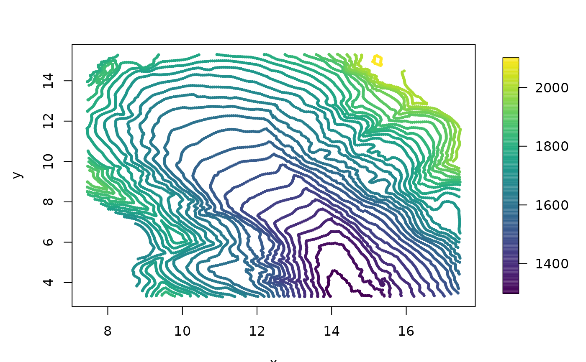

glacier.RdA moderate size (about 8400 locations) spatial dataset that is well-known in the applied mathematics approximation literature for testing interpolation methods.
data(glacier)The format of glacier is a list with two components:
8338x2 matrix of the locations (meters??).
A vector of elevations (meters ??).
This data set appears in papers that develop interpolation methods for scattered data and serves as an interesting bridge to the examples in applied math that develop radial basis function surface fitting. The data was originally used by R. Franke.
Unfortunately at this time we can not find any background on where these data were collected or indeed even the location of this glacier. However, it is an interesting data set in that it appears that the elevations are reported along lnes of equal elevation, i.e. contours, perhaps from a digitization of a topographic map or survey. It is important to estimate the surface in a way that the artifacts from discretization are not present. In the example below the compactly supported kernel interpolation still has some artifacts.
The glacier data set is available at this website https://oleg-davydov.de/scat_data.html
The examples below are useful for comparing different approximations to a Gaussian spatial process estimate for the elevation surface. Of course in using a stationary covariance ( e.g. the Matern or Wendland) these are also radial basis smoothing or interpolation of the data.
data( glacier )
# EDA for raw obs:
bubblePlot( glacier$loc, glacier$y, highlight=FALSE, size=.5)

# identifying contour levels. Note this is reported at regular levels
# (Every 25m ???)
table( glacier$y)
#>
#> 1300 1325 1350 1375 1400 1425 1450 1475 1500 1525 1550 1575 1600 1625 1650 1675
#> 60 117 150 157 176 195 220 245 272 297 325 350 386 425 434 481
#> 1700 1725 1750 1775 1800 1825 1850 1875 1900 1925 1950 1975 2000 2100
#> 531 582 545 496 402 324 266 191 182 145 139 123 99 23
# find sigma and rho by maximum likelihood
# for a fixed range
# the default is the Wendland covariance with k=2
# See help(Wendland)
# this takes about 5 minutes
# macbook pro Quad-Core Intel Core i5 8 GB
#options(spam.nearestdistnnz=c(5e7,1e3))
#system.time(
# obj0<- fastTps(glacier$loc, glacier$y,
# theta=2,
# profileLambda=TRUE)
#)
# set.panel(2,2)
# plot( obj0)
# set.panel()
# just evaluate at MLE
# reset default matrix size that the spam pacakge will use.
if (FALSE) {
options(spam.nearestdistnnz=c(5e7,1e3))
system.time( obj1<-
fastTps(glacier$loc, glacier$y,
theta=2,
lambda= 7.58e-5
)
)
system.time(
look1<- predictSurface( obj1, nx=150, ny=150)
)
imagePlot( look1)
system.time(
out<- simLocal.spatialProcess(obj1, M=3, nx=150, ny=150)
)
set.panel( 2,2)
imagePlot( look1)
zlim<- range( out$z, na.rm=TRUE)
for( k in 1:3){
imagePlot(out$x, out$y, out$z[,,k], zlim=zlim)
}
# near interpolation surface using Matern smoothness .5
system.time(
obj2<- spatialProcess(glacier$loc, glacier$y,
aRange = 1.5,
lambda = 1e-5,
smoothness = .5)
)
system.time(
out<- simLocal.spatialProcess(obj2, M=3, nx=150, ny=150,
fast=TRUE)
)
set.panel( 2,2)
imagePlot( look1)
zlim<- range( out$z, na.rm=TRUE)
for( k in 1:3){
imagePlot(out$x, out$y, out$z[,,k], zlim=zlim)
}
system.time(
look2<- predictSurface.mKrig( obj2, nx=150, ny=150,
fast=TRUE, NNSize=5)
)
system.time(
look2B<- predictSurface( obj2, nx=150, ny=150,
fast=FALSE)
)
err<- c((look2$z - look2B$z)/look2B$z)
stats( log10( abs(err) ) )
# some error plots ( percent relative error)
imagePlot(look2$x, look2$y, 100*(look2$z - look2B$z)/look2B$z )
imagePlot(look2$x, look2$y, 100*(look1$z - look2B$z)/look2B$z )
}